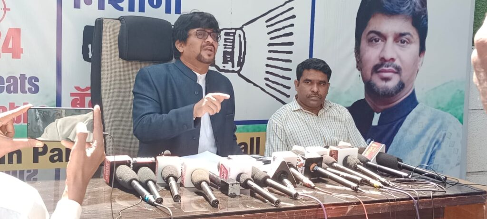

R. R. Pandayan Saheb, the Sarsenapati (Chief Leader) of Bhim Sena, is a dedicated social reformer and
Ambedkarite leader with an unshakable commitment to justice, equality, and the upliftment of the
oppressed. He has become a powerful voice for the rights of Dalits, Adivasis, backward classes, and all
marginalized communities across India.
Guided by the revolutionary teachings of Dr. B.R. Ambedkar, R. R. Pandayan has played a pivotal role in
mobilizing youth and citizens to fight against caste discrimination, economic injustice, and social
inequality. His leadership reflects both ground-level activism and a vision for a more equal, secular, and
empowered India.
Bhim Sena’s mission is simple yet powerful: To uplift every marginalized individual through education, legal empowerment, and social activism. By
focusing on grassroots organizing and community-based movements, we aim to:
Under the leadership of Sarsenapati R. R. Pandayan Saheb, Bhim Sena has grown into a force for social justice and equality. His vision and relentless
dedication to the cause of Dalit empowerment have inspired thousands of youth, activists, and workers to join the movement. With his guidance, Bhim
Sena continues to fight for the social and political rights of those who have long been denied their rightful place in society.
Bhim Sena is a dynamic socio-political organization dedicated to uplifting marginalized communities, especially Dalits and backward classes, across India. To effectively carry out its mission of promoting equality, justice, and empowerment, Bhim Sena needs strong unity and collective action. This involves building networks of like-minded individuals, mobilizing youth, students, and activists, and organizing peaceful protests and awareness campaigns. Education plays a vital role in spreading Dr. B.R. Ambedkar’s vision of liberty and justice, and Bhim Sena is committed to providing legal awareness and educational programs to ensure that every marginalized individual knows their rights. Grassroots support and leadership development are also crucial in empowering communities and training the next generation of leaders. Advocacy efforts are needed to push for policy reforms, while media outreach helps raise awareness about the struggles faced by marginalized groups. Financial support through fundraising and donations ensures that Bhim Sena can sustain and expand its efforts. Collaboration with other like-minded organizations and creating safe spaces for individuals to share their experiences is essential for lasting change. Together, these efforts will help Bhim Sena fulfill its goal of creating an inclusive society where every individual is treated with dignity and respect.
Educate: We believe that education is the key to transforming lives. Bhim Sena is committed to spreading Dr. Ambedkar’s principles of social justice through awareness campaigns, workshops, and educational initiatives. These programs help communities understand their rights under the Indian Constitution and inspire them to take charge of their own futures. Empower: Bhim Sena empowers individuals by providing legal support, career guidance, and financial aid for education and entrepreneurship. Through grassroots mobilization, we ensure that marginalized communities can access opportunities in various fields, be it education, employment, or social activism. Advocate: Bhim Sena is committed to advocating for policy changes that benefit marginalized communities. We actively participate in rallies, protests, and lobbying efforts aimed at securing justice for the oppressed. By raising awareness on social issues such as caste-based discrimination, untouchability, and inequality, we strive to influence positive change at both the local and national levels